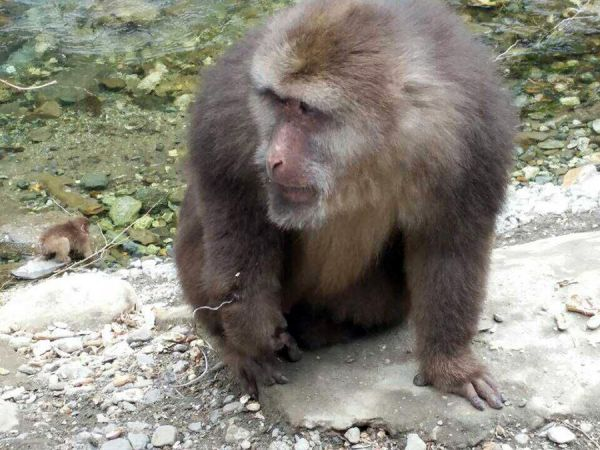
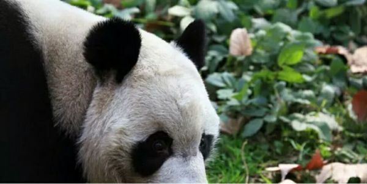
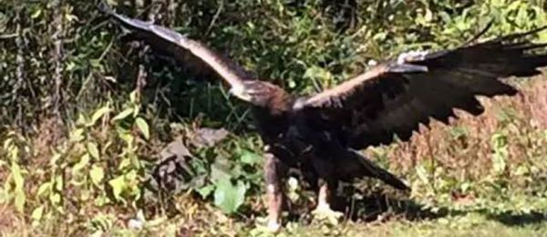
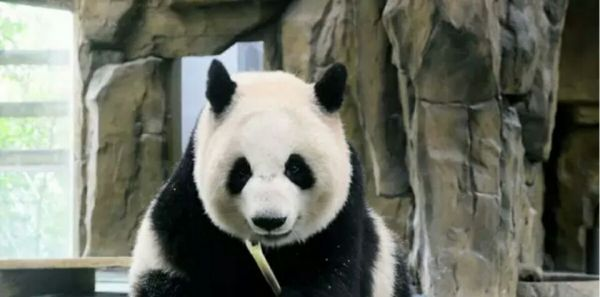
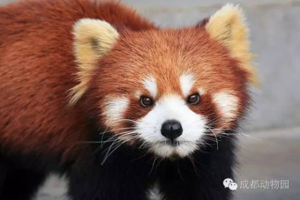
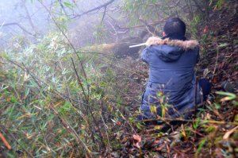
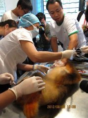
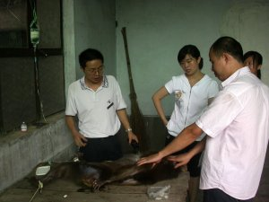

动物救护

银厂沟藏酋猴救护
3月2日，成都动物园、成都野生动物救护中心接到彭州银厂沟...
MORE+

大熊猫莉莉护理训
血液的采集：大熊猫进入训练笼坐好后，训练其把手臂从采血口...
MORE+

受伤的野生动物伤...
一只金雕慢慢踱出笼子，它警惕地左右观察环境，边走边伸展翅...
MORE+

大熊猫莉莉护理训...
在圈养条件下，为保证大熊猫个体的健康状况和繁殖的需要，动...
MORE+

小熊猫白内障专业...
近日，成都动物园兽医与普瑞眼科医院专家一起对其进行了会诊...
MORE+

[救护]成都动物...
11月9日，成都动物园成都野生动物救护中心在崇州鞍子河自...zzzzzz
MORE+

[医疗]为珍稀动...
2012年7月初，饲养员发现一只名为老母子的雌性川川川川川zzzzz
MORE+

[救护]崇州苏门...
2009年12月18日12点，成都市野生动物救护中心得到了救助zzzzzzzz
MORE+
银厂沟藏酋猴救护
3月2日，成都动物园、成都野生动物救护中心接到彭州银厂沟...
MORE+
1
2
3
4